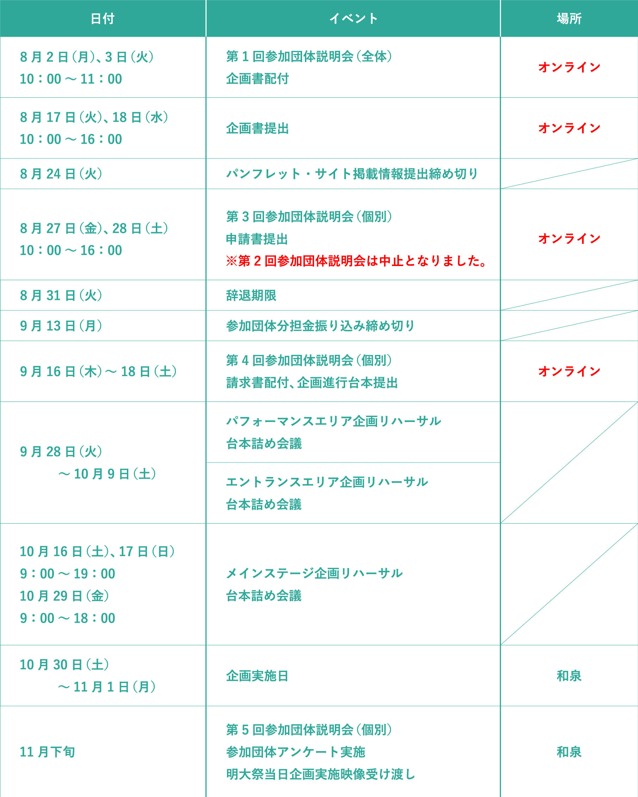

屋外ステージにて企画を行う方へ
【メインステージ企画／パフォーマンスエリア企画／エントランスエリア企画】
新型コロナウイルス感染症流行により、第1回参加団体説明会、企画書提出、第3回参加団体説明会、第4回参加団体説明会がオンラインでの実施となりましたのでご注意ください。

（※横スクロールが可能となっております。）
注意事項が何点かございますのでご確認ください。
※新型コロナウイルス感染症流行により、明大祭参加募集説明会でお伝えした日程とは異なっております。ご注意ください。
※屋外ステージで企画を行う方に対しては、第2回参加団体説明会がございませんのでご注意ください。
※スケジュールは変更される場合があります。
| 日付 | イベント | 配布資料 | ||||||||||||||||||||||
| 5月24日(月)～28日(金) | 明大祭参加募集説明会 | 明大祭参加募集要項 | ||||||||||||||||||||||
| 8月2日(月)、3日(火) | 第1回参加団体説明会 | 各種資料 ファイル内の配布資料は、以下の通りです。
| ||||||||||||||||||||||
| 8月27日(金)、28日(土) | 第3回参加団体説明会 | 各種資料 ファイル内の配布資料は、以下の通りです。
|